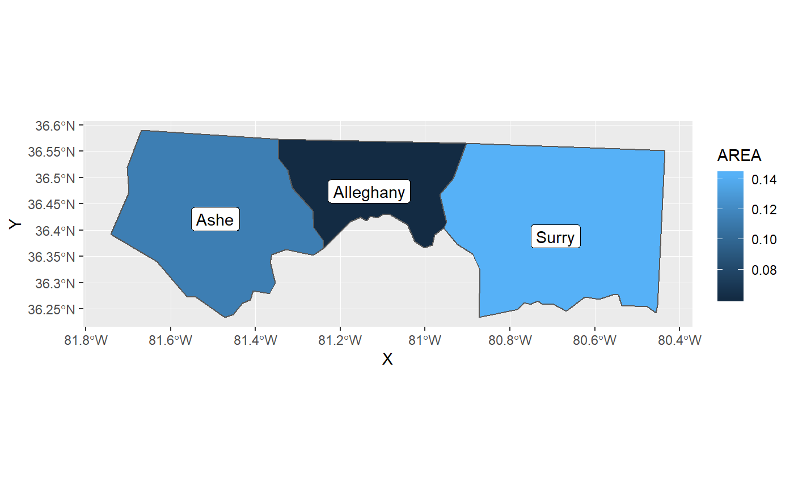
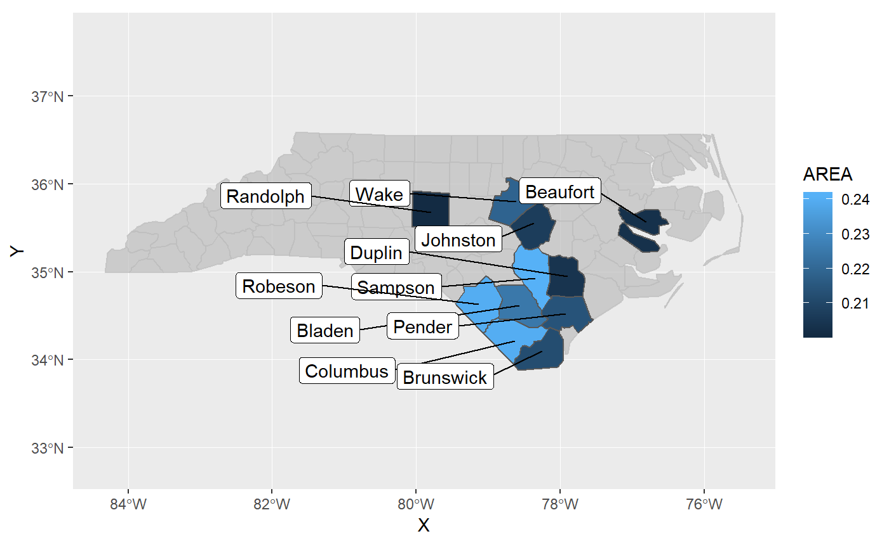
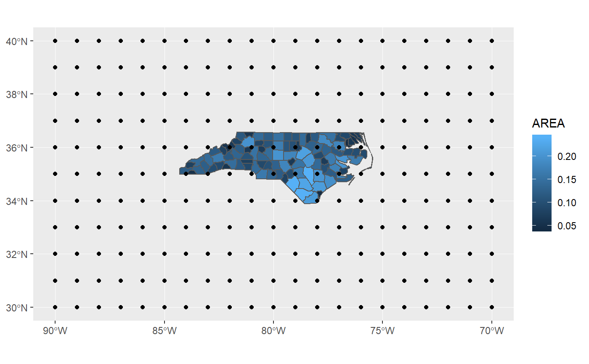
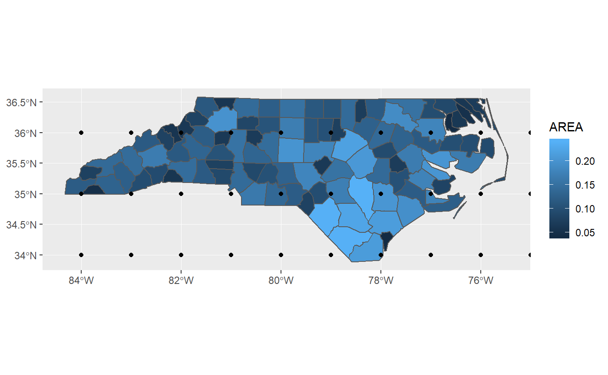

Provides several geoms which plot labels generated from sf data.
Installation
ggsflabel is not released on CRAN yet. Please install with install_github().
# install.packages("devtools")
devtools::install_github("yutannihilation/ggsflabel")Example
geom_label() for sf
library(ggsflabel)
#> Loading required package: ggplot2
nc <- sf::st_read(system.file("shape/nc.shp", package = "sf"), quiet = TRUE)
ggplot(head(nc, 3)) +
geom_sf(aes(fill = AREA)) +
geom_sf_label(aes(label = NAME))
#> Warning in st_point_on_surface.sfc(data$geometry): st_point_on_surface may
#> not give correct results for longitude/latitude data
geom_label_repel() for sf
if (requireNamespace("gghighlight", quietly = TRUE)) {
library(gghighlight)
ggplot(nc) +
geom_sf(aes(fill = AREA)) +
gghighlight(AREA > 0.20) +
geom_sf_label_repel(aes(label = NAME),
force = 100, nudge_x = -2, seed = 10) +
scale_y_continuous(expand = expand_scale(mult = 0.5))
}
#> Warning in st_point_on_surface.sfc(data$geometry): st_point_on_surface may
#> not give correct results for longitude/latitude data
lims() for sf
points_sfg <- sf::st_multipoint(as.matrix(expand.grid(x = -90:-70, y = 30:40)))
points_sfc <- sf::st_sfc(points_sfg, crs = sf::st_crs(nc))
p <- ggplot() +
geom_sf(data = nc, aes(fill = AREA)) +
geom_sf(data = points_sfc)
# too wide
p
# shrink the limits to the bbox of nc
p + lims_bbox(nc)